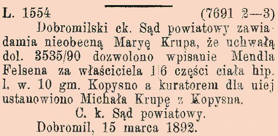

W Gazecie Lwowskiej (Nr 293 z 24 grudnia 1892 r.) znalazło się następujące ogłoszenie:

Mieszkańcy Kopysna, chcąc uregulować swoje czynności i nadać im formę prawną korzystali z usług c.k. notariuszy w Dobromilu. Akty notarialne z lat 1891-1913 znajdują się na stronie Archiwum Państwowego w Przemyślu [10].
W Kurierze Lwowskim z dnia 9.04.1903 r. zamieszczono ogłoszenie o tym, że z urzędu podjęto postępowanie przeciwko Michałowi Krupie z Kopysna za sprzeniewierzenie pieniędzy gminnych (anno.onb.ac.at).
Według opracowania "Skorowidz leśny na rok 1907" autorstwa Ignacego Szczerbowskiego (www.wbc.poznan.pl) w tym czasie Albert Kettner, pochodzący z miejscowości Sebnitz (Niemcy - wikipedia.org), mieszkaniec Kopysna, sprawował funkcję podleśniczego w lasach będących własnością Pawła Tyszkowskiego (www.wbc.poznan.pl; skan nr 303 i 304 - błędnie podano nazwisko Kettner, jako Kattner).
Gazeta Lwowska (Nr 195 z 27 sierpnia 1909 r. - jbc.bj.uj.edu.pl) doniosła o licytacji nieruchomości:
"L. cz. E. 1327/9 (7) (8406)
Na wniosek Mojżesza Jammera odbędzie się dnia 6 października 1909 o godzinie 8 przed południem w sądzie niżej wymienionym, w biurze Nr. 11 licytacya realności lwh. 304 ks. gr. gm. Kopysno, stanowiącej budynek pod Nr. 25 i ogród 10 a. 75 m2 celem zniesienia spółwłasności.
Realność powyższą oceniono na 540 koron.
Cena wywołania wynosi 540 kor., zaś najniższa oferta, poniżej której sprzedaż nie nastąpi, wynosi 360 kor.
Cena kupna ma być złożoną w sądzie do dni 30 od prawomocności uchwały zatwierdzającej akt licytacyjny.
O. k. Sąd powiatowy, Oddział IV.
Dobromil, dnia 11 sierpnia 1909."
W latach 1906-1912 część mieszkańców Kopysna wyemigrowała do USA. Wykaz tych osób i bliższe dane dotyczące ich emigracji zamieszczono poniżej w "Dokumentach do pobrania" - Wykaz emigrantów do USA [11].
Jeden z mieszkańców Kopysna Jan Krupa (ur. 15.03.1889 r.) 10.07.1922 r. uzyskał obywatelstwo USA (Declaration of Intention).
{kind=link}